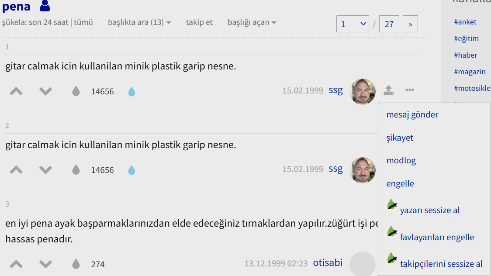
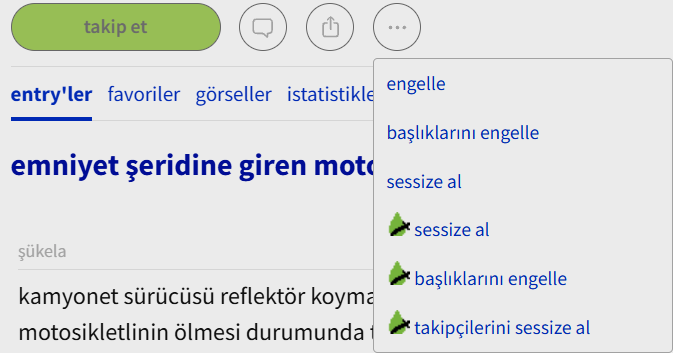

EksiEngelPlus 
Versiyon notları için tıklayın
⚙️ Ayarlar
📅 Tarih Filtresi
🎯 Filtre Kuralları
0Engelleme işlemleri sadece belirli tarih kriterlerine uyan hesaplara uygulanır.
💾 Önbellek
Kayıt tarihleri 30 gün boyunca önbellekte saklanır.
Toplam: 0
Geçerli: 0
Süresi Dolmuş: 0
💾 Depolama Kullanımı
Sadece kuyruk ve tamamlanan işlem verilerini temizler.
Kullanım: Yükleniyor... / 5MB
🎨 Görünüm
Arayüz temasını değiştir
Kullanım Klavuzu
- Ekşi Sözlük Arayüzü Üzerinden Kullanımı
- Eklenti Menüsünden Kullanımı
-
Eklenti simgesine tıklayarak eklenti menüsünü açın.
Gireceğim Listedeki Yazarları Engelle / Engelini Kaldır butonuna tıklayın.
Elinizdeki yazar listesini metin kutusuna yapıştırıp, Engelle veya Engeli Kaldır butonuna tıklayın. -
Eklenti simgesine tıklayarak eklenti menüsünü açın.
Tüm Engellerimi Kaldır butonuna tıklayın.
-
Entrylerin ayar menüsü güncellendi.

Yazarların sayfasındaki menü güncellendi.
